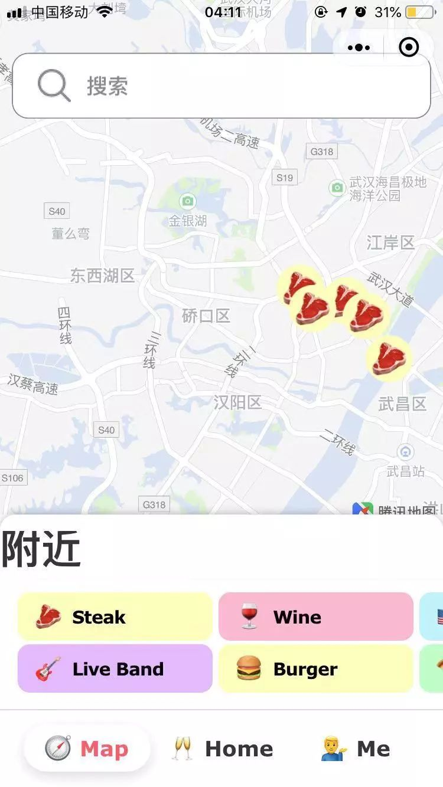
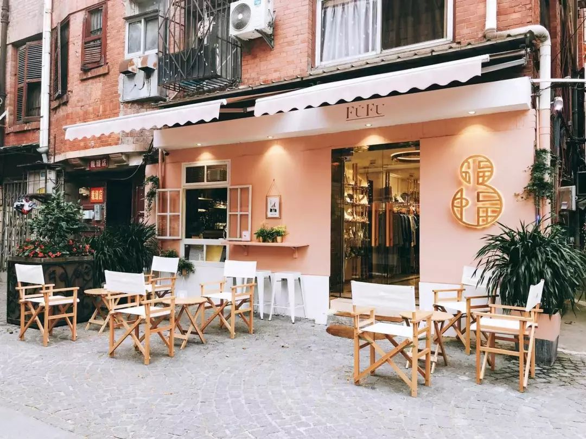
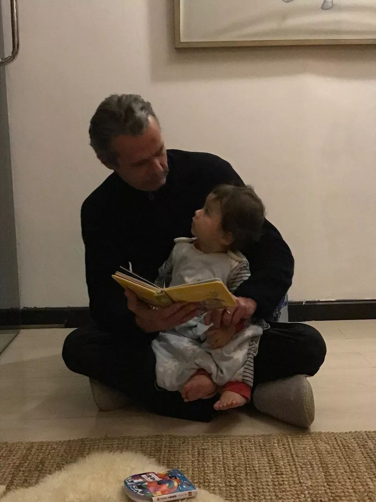
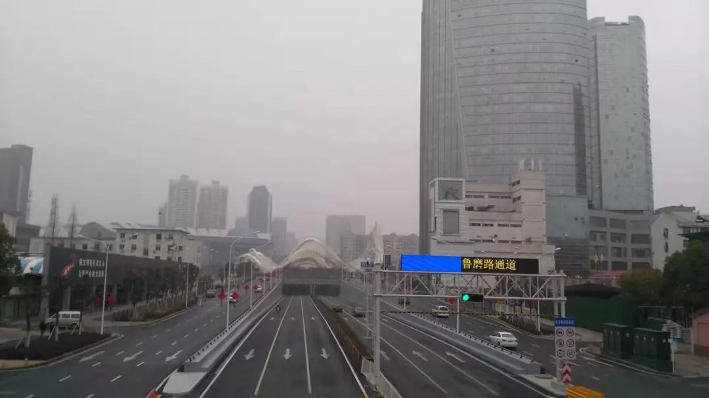
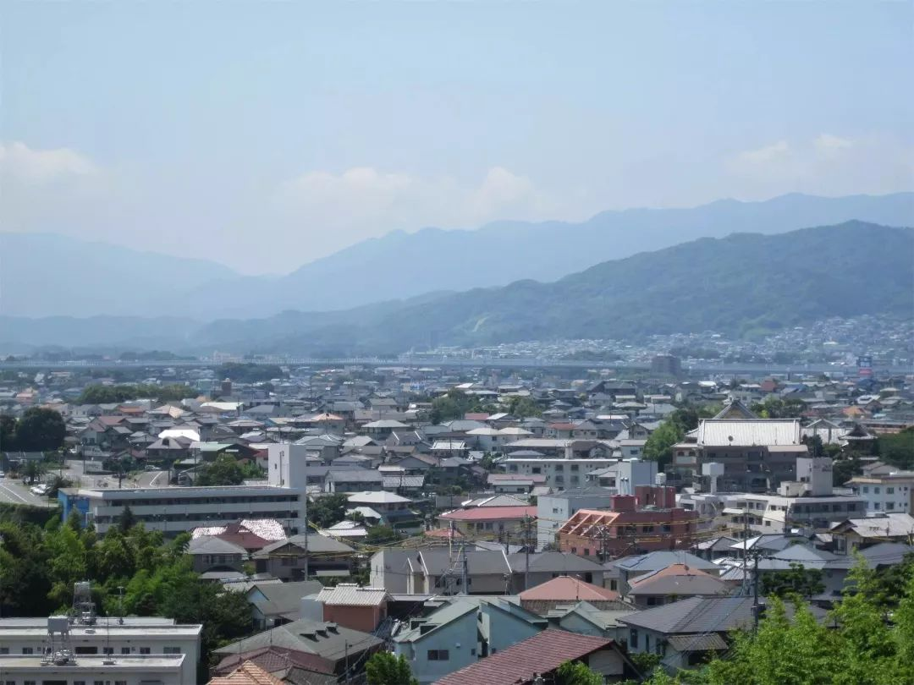

吾心安处即是家
原文链接 备份链接 1 农历二十九。去药店，排队买口罩。 前面一位五十多岁、身穿墨绿色工作服的大叔，从胸前的口袋里掏出一个信封，倒出一堆折叠得方方正正的纸块。展开一个个纸块，现出一张张二十元、十元、五元的纸币。 有种看穿越剧的错觉。之后， …
开启更有意思的武汉！请点击上方优良better →点击右上角“…” → “设为星标 ”

1.9万，这是2018年7月湖北省人社厅调研得出的湖北省常住外国人人数，其中81%聚集在武汉。他们时常出没于楚河汉街、光谷步行街、花园道、武大周围、沌口，靠着不流利的中文和学来的几句武汉话，和这片土地上的人们打成一片。
疫情发生后，美国、日本、澳大利亚、德国、法国、英国、斯里兰卡、泰国等国家陆续宣布从武汉撤离本国公民，但是仍有许多外国人选择留在武汉，和武汉一起度过短暂的“黑暗时刻”。
“我爱武汉，因为它是一个充满活力的城市。而现在街上空无一人，没有一点噪音，这让我觉得很难过。”在武汉生活了近10年的Fred如是说。
那些留在武汉的外国人，还好吗？
Jake是在武汉的外国人中的一员，也是较为特殊的一个——他曾被评为“武汉最会吃喝玩乐的洋老板”，所创立的“小赞Wuhan”为身处武汉的外国人提供了吃喝玩乐的一系列信息，帮助他们建立起一个社交平台。在武汉，80%-90%的外国人都是小赞Wuhan的粉丝。

小赞Wuhan的微信小程序
早在12月31日，Jake就从一个朋友口中听闻了新冠病毒的消息，和绝大多数人一样，他并未意识到事情的严重性，以为病毒只能直接通过病毒源或者食物感染。他相信新闻报道，在当时没有人传人的依据。
直到后来，医院开始传出这种病毒具有传染性的消息，并且国外也开始有确诊病例，而武汉的确诊人数依然维持稳定时，Jake才开始担心这次疫情的严重。
在1月13号小赞Wuhan的颁奖典礼上，Jake开始出现低烧的症状，一直持续3天左右才渐渐退烧。随后，他又开始咳嗽，打喷嚏，流鼻涕和鼻窦感染，几天之内，又陆续出现肌肉酸痛和胸肺疼痛的症状。

Jake在小赞Wuhan的颁奖礼
他无法确定身体上的症状是否来源于新冠病毒，同时更加担心在现在人满为患的医院环境中，再次被交叉感染。在护理学硕士母亲的建议下，他把自己隔离起来，尝试服用药物自我治疗，庆幸的是，情况似乎在慢慢好转。
在采访过程中，Jake频繁地用到“worry（担心）”、“nervous（紧张）”、“afraid（害怕）”、“concerns（担忧）”这样的字眼，即使隔着屏幕，依然能感受到他的不安。
“我不确定自己的病情。但是我有一种强烈的感觉，我正是成百上千未经诊断的新冠患者之一。”
1月29日，美国从武汉撤侨的包机从武汉天河机场起飞，到达阿拉斯加后又飞往南加州，降落在河滨县空军基地。
Jake因为没有办法证明身体健康状况而不能获得申请，没有登上这架飞机，他却在当天也前往了机场，为了运送被撤离的好友母女。

Jake送朋友去机场
当问到会不会担心交叉感染时，Jake告诉我，99%在武汉的外国人没有自己的车，而领事馆组织的撤离根本没有为他们提供前往机场的交通工具。为此，只能他尽可能做了很多预防措施，然后送他们去机场。
前一天下午2点他刚刚从光谷接这对母女送到机场，凌晨2点30却得知女孩的护照不在身上，因此被拒绝登机，他又不得不赶往机场将她们接回光谷，直到凌晨5点才到家。
采访过程中，他仍然处于待命状态，一旦飞行时间确定，还有几位英国人需要他开车送往机场。
虽然还身处焦虑和恐慌之中，Jake已经在试着调整心态，找到更好的状态。他开始第一次尝试做中国菜，虽然这比西餐花费他更多时间，却能让他获得平和。

Jake做的虎皮青椒
等疫情结束后，Jake想去见见自己的母亲，也许会尝试用新技能为她煮一些中国菜，然后告诉她自己有多爱她。
法国人Fred就生活在疫情最严重的汉口，黎黄陂路附近。

Fred
今年是Fred在武汉生活的第十年。
他和妻子相识于一场party，天生浪漫而热爱艺术的Fred与音乐作曲出身的武汉女孩Vicky一见钟情，两人相爱，共同创立了服装品牌FuFu，在黎黄陂路珞珈山街开了一家小店，提供咖啡甜点，售卖自己设计以及法国独家代理的衣服。
Fred和妻子Vicky

位于黎黄陂路的FuFu Store
大约在1月15号左右，Fred就窥见这场疫情的凶猛程度，他给店员们发放了口罩，并叮嘱他们做好清洁和卫生措施。1月20日，因为疫情的进一步蔓延，Fred关闭了店铺，暂时歇业。
2月1日上午，法国领事馆组织了200多人从武汉撤离，他们通知了Fred，但Fred却选择留在武汉。
在武汉生活了近十年，Fred觉得自己就是一个武汉人。于是他决定留下来，与这艘带他远航发现新世界的船一起渡过难关。
每天，Fred还是会戴上口罩、手套和眼镜，跳上自行车来往于工作室与家之间，继续完成设计作品，但在这期间，不会再和任何人接触。
工作中的Fred
疫情之后，Fred常常感受到孤独。几百万人生活在同一座城市却各自隔绝的现状令他沮丧，他渴望与人见面，甚至渴望在武汉的街头和大家一起跳舞。
幸运的是，妻子和一岁的儿子都在他身边。在家里的这些日子，他有更多时间和孩子一起玩，做一些法国菜，在下午享受一杯咖啡。

Fred说，法国国内也开始恐慌，政府甚至开通了专线来帮助人们解答新冠病毒的相关问题，有些人会问一些很可笑的问题，比如：我吃了中国菜会被感染吗？我从中国收到包裹，可以安全打开吗？
相反，身处武汉的他显得更加冷静：“中国政府为此做出了所有最好的决定，我有信心。”

美国人Roger第一次来武汉还要追溯到1994年，他曾在百威的武汉啤酒厂工作，负责包括武汉啤酒厂在内的国际项目，每年都要到中国出差。
Roger在武汉认识了许多朋友，武汉让他感觉很放松。2008年退休后，Roger移居武汉，并开始他的中国和亚洲环游。

Roger
截止目前，美国共从武汉撤离201人，而据统计，在武汉的美国人约有1000人——仍然有几百位美国人留在武汉。
1月19日，Roger和妻子从美国度假回来后三天，武汉封城。Roger的妻子放心不下父母，不愿意离开武汉，为了让妻子安心，Roger选择留在武汉，陪在她身边。


封城后，Roger拍下的武汉
Roger喜欢春节，自从和中国妻子结婚以来，每年除夕他们都会在妻子的父母家一起吃年夜饭，并在春节之后和妻子一起去国内或者亚洲其它地方旅行。
今年他们依旧在除夕拜访了妻子的父母，但春节后的越南行计划却不得不取消。除了出门买需要的食物和探望妻子的父母外，他们再没有出门。Roger说，他很害怕与人接触。

准备出门的Roger
待在家里的日子，Roger每天看书，锻炼，看新闻和以前的电视节目，他有些紧张，但总体还保持乐观。
“病毒一定会被打败，等疫情过去，我想离开武汉转一转，也许去科罗拉多州远足或者滑雪。”
72岁的岛田孝治也留在武汉。
2010年他来到武汉，在华师文化街开了“顶屋咖喱”，在学生之间颇有名气。华师文化街拆迁后，顶屋咖喱又分别在街道口和东湖村开了新店。

岛田孝治
岛田对于疫情的感知并不强烈，他不懂中文，也没有上网，对于疫情的全部信息都来自顶屋的店长丹子。但丹子怕岛田担心，并没有透露太多，只是告知他注意事项，让他尽量不要出门。
疫情初期，岛田接受了几家媒体采访，1月23号之后，由于对新冠病毒的复杂情况摸不清，为了不制造谣言造成恐慌，岛田拒绝了后续日本媒体的采访邀请。
对于岛田来说，武汉是他的第二故乡，这里和他的出生地福冈很像，人们性格都很爽朗，气候也类似，这让他感觉回到了青年时代。除了必须回日本办签证的情况，每年岛田都在丹子家过年，疫情爆发后，岛田也并没有回到日本的想法：“武汉也是我的故乡，没有必要回日本。”

日本福冈
在武汉的这些日子，岛田过着和往常差不多的生活，他依然每天看书写字，也会和大家一起摘菜。每天都有好吃的家常菜，这让他觉得很幸福。

岛田和大家一起在农田
疫情后顶屋咖喱暂时歇业，但因为平时卫生就做得很好，丹子也正在学习消毒，岛田并不太担心顶屋以后的状况。对于武汉，对于突然的疫情，岛田都显得很乐观。
“武汉的大家都很努力，我相信一定会好起来的。武汉加油。”
各国撤离进行中，仍有大批外国人留在武汉，Fred也告诉我，他在武汉的绝大多数朋友都决定留下。
这一刻，这些来自不同国家、有着不同面孔的外国人，正和900多万武汉人一起，在这座城市的一扇扇紧闭的门里等待着，等待疫情过后武汉重见天日的那一天。
text | 慕遥
photo | 受访者提供
新朋友长按下方二维码
添加”better桑”
老朋友可直接勾搭better君、better酱

加better桑为好友
💬
# 陪在你身边熬过这段艰难时光的，是谁？#
点击文末右下角留言
-
END
原文链接 备份链接 1 农历二十九。去药店，排队买口罩。 前面一位五十多岁、身穿墨绿色工作服的大叔，从胸前的口袋里掏出一个信封，倒出一堆折叠得方方正正的纸块。展开一个个纸块，现出一张张二十元、十元、五元的纸币。 有种看穿越剧的错觉。之后， …
原文链接 备份链接 “如果再征召，你就报名，争取加入第二支队伍。我结束隔离后，也会加入心理援助队伍。你去，我也去。他们不能来，我们过去！” 配图 | 关斌斌 征 稿 从2019年12月8日首例武汉新型冠状病毒肺炎患者出现，到2020年1 …
原文链接 备份链接 我有点后悔离开武汉了。自从回到乡下，武汉的肺炎疫情很是让人揪心，过年也变得寡然无味，大家都心神不宁的。早知如此，还不如就留在武汉过年，还安心一些。 封城那天，网络上不断有人炫耀“逃离”武汉，我就觉得好笑。疫情面前，有人 …
原文链接 备份链接 若干年后回望，这一定是一段值得铭记的日子。因为新型冠状病毒感染的肺炎疫情，许多家庭无法团圆。疫情数据地图的每次刷新都令人揪心。我们和千万武汉人在一起，这不只是一句安慰，因为没有人能够置身事外。 之前，我们向用户征集这 …
原文链接 备份链接 防护和消毒还是很重视的，每送一次，全车消毒一次。 口 述 | 尹 达 整 理 | 黄 祺 我叫尹达，现在是武汉龙安社区的一名志愿者司机。 我的工作是保险销售，疫情发生之前，我一般每天一早去公司，然后出门拜访客户。如果去 …